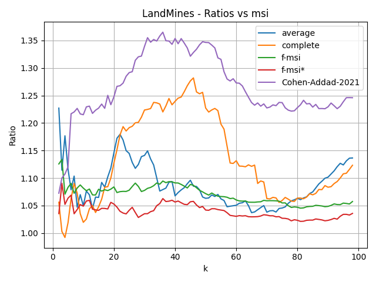
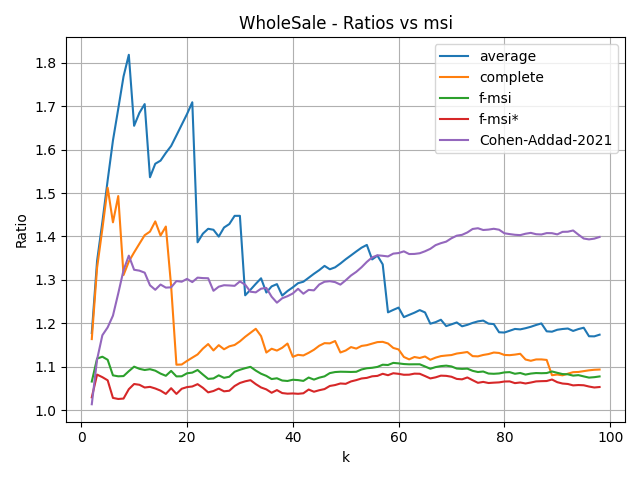
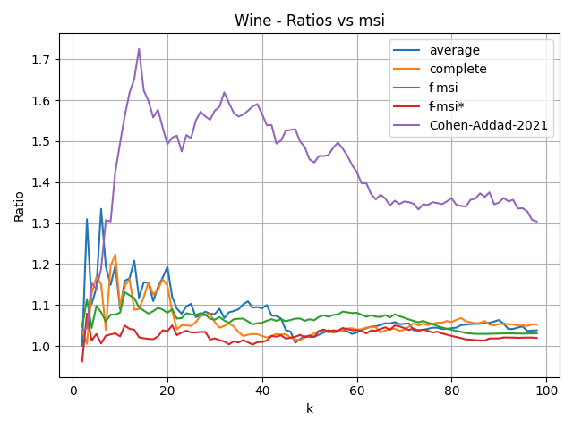

Ratio of each method's average cost ratio to msi on the Ecoli dataset.
Ratio of each method's average cost ratio to msi on the Ecoli dataset.

Ratio of each method's average cost ratio to msi on the LandMines dataset.
 Ratio of each method's average cost ratio to msi on the UKM dataset.
Ratio of each method's average cost ratio to msi on the UKM dataset.

Ratio of each method's average cost ratio to msi on the WholeSale dataset.

Ratio of each method's average cost ratio to msi on the Wine dataset.